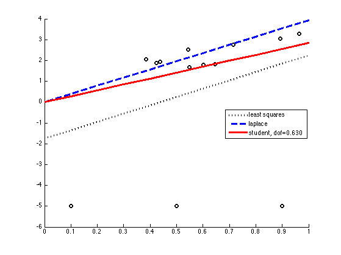
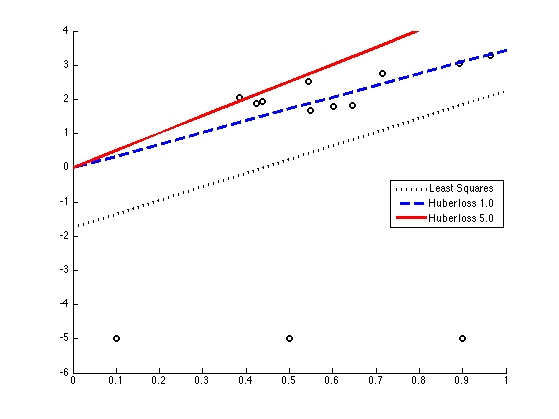

Robust linear regression demo
PMTKneedsOptimToolbox linprog
Contents
% This file is from pmtk3.googlecode.com function linregRobustDemo()
requireOptimToolbox seed = 0; setSeed(seed); x = sort(rand(10,1)); y = 1+2*x + rand(size(x))-.5; % add some outliers x = [x' 0.1 0.5 0.9]'; k = -5; y = [y' k k k]'; n = length(x); Xtrain = x(:); modelLS = linregFit(Xtrain, y, 'lambda', 0);% least squares soln xs = 0:0.1:1; Xtest = xs(:); yhatLS = linregPredict(modelLS, Xtest);
Laplace loss
modelLP = linregRobustLaplaceFitLinprog(Xtrain, y); yhatLaplace = linregPredict(modelLP, Xtest);
Optimization terminated.
Student loss
modelStudent = linregRobustStudentFit(Xtrain, y); yhatStudent = linregPredict(modelStudent, Xtest);
Laplace and student on same plot
legendStr ={'least squares', 'laplace', sprintf('student, dof=%5.3f', modelStudent.dof)};
doPlot(x, y, {yhatLS, yhatLaplace, yhatStudent}, legendStr)
printPmtkFigure('linregRobustLaplaceStudent')
 Huber loss
if 1 legendStr = {'Least Squares'}; deltas = [1 5]; for i=1:length(deltas) delta = deltas(i); modelHuber = linregRobustHuberFit(Xtrain, y, delta); yhatHuber{i} = linregPredict(modelHuber, Xtest); %#ok legendStr{1+i} = sprintf('Huber loss %3.1f', delta); end doPlot(x, y, {yhatLS, yhatHuber{:}}, legendStr); printPmtkFigure('linregRobustHuber') end
end
function doPlot(x, y, yhat, legendStr) if ~iscell(yhat), yhat = {yhat}; end K = length(yhat); xs = 0:0.1:1; styles = {'k:', 'b--', 'r-', 'r-o', 'b:s', 'g-.*', 'k-.+', 'c--v', 'y-^'}; figure; hold on; plot(x,y,'ko','linewidth',2) h = []; for i=1:K h(i) = plot(xs, yhat{i}, styles{i}, 'linewidth', 3, 'markersize', 10); end plotLegend(legendStr, h) %axis_pct set(gca,'ylim',[-6 4]) end function plotLegend(legendStr, h) if isOctave() legendStr = [{'Data'}, legendStr]; legend(legendStr, 'location', 'east'); else legend(h, legendStr, 'location', 'east'); end end